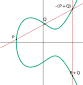
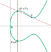

A Geometrical Introduction to Double-Odd Elliptic Curves
To give an intuition about double-odd elliptic curves, why we use them and how we leverage their structure, we present here a geometrical interpretation.
For use in cryptography, we work over a finite field \(\mathbb{F}_q\) of order \(q\), typically integers modulo a given prime. All we explain here also works over field extensions, in which case \(q\) is a given power of a prime integer (called the field characteristic). The only restriction is that the characteristic should not be 2 or 3 (elliptic curves over such fields use different equations and rules). However, finite field are not very visual; the pictures below pretend that we are using real numbers, where there are such things as continuous functions. These pictures are still useful in getting used to the underlying ideas.
Motivation
Short Weierstraß Curves
Let's start with a classic "short Weierstraß" curve and the definition of point addition, as show below.
The curve here is the set of points \(x, y\) that fulfill the curve equation \(y^2 = x^3 + Ax + B\) for two given constants \(A\) and \(B\) that define the curve shape. As is well-known, every elliptic curve can be converted into that kind of shape and equation with appropriate changes of variables.
Point addition is defined as follows:
-
The neutral element is the formal extra "point-at-infinity" (which is not in the plane and does not have coordinates).
-
For a point \(P\), the point \(-P\) is the symmetric of the point relatively to the horizontal axis.
-
When adding two points \(P\) and \(Q\) together, the line \((PQ)\) is drawn; it intersects the curve in a third point which is \(-(P+Q)\), i.e. the opposite of the sum of \(P\) and \(Q\).
This is illustrated by the red lines on the figure. Given the coordinates of \(P\) and \(Q\), the coordinates of \(P+Q\) can be computed as rational functions of \(P\) and \(Q\), with coefficients that depend only on the curve parameters. Unfortunately, this process has exceptional cases which must be handled differently:
-
The point-at-infinity does not have defined coordinates, so it can be hard to apply rational functions on these non-existing coordinates.
-
When \(P = -Q\), the line is vertical \((PQ)\) and the third intersection point is "at infinity", again with no defined coordinates.
-
When \(P = Q\) (i.e. a point doubling), the line \((PQ)\) is not well-defined; if we apply the rational functions that compute point addition in general, we end up dividing zero by zero. Instead, we have to use the tangent to the curve on \(P\), and this leads to different rational functions to obtain the result.
These exceptional cases are mightily inconvenient. The point-at-infinity can somehow be handled by switching to fractional coordinates, in which each coordinate is represented by a fraction. In that case, infinity corresponds to a denominator value of zero. There are several well-known systems of coordinates that use fractions, e.g. projective coordinates (\((x, y) = (X/Z, Y/Z)\)) or Jacobian coordinates (\((x, y) = (X/Z^2, Y/Z^3)\)). Formulas working on fractional coordinates can be established, that will handle infinities, and have the added benefit of allowing most computations to be done only with additions, subtractions and multiplications, and no divisions. A single division will be needed only at the end of a long computation, usually for encoding a point into a well-defined sequence of bytes. This promotes performance, because divisions are more expensive than multiplications. The cost of formulas is thus often expressed as a number of multiplications; it is common practice to separate general multiplications from squarings, the latter being usually somewhat faster than multiplications.
Handling the exceptional case related to point doublings is harder. This case can be detected with a simple test, but this leads to conditional execution, i.e. non constant-time behaviour, which is unsafe in all generality (timing attacks will detect that occurrence which may lead to information leaks). In general, one can apply both formulas, for general addition and for doubling, and select the right one afterwards in a constant-time way, but this is expensive. Complete formulas that do not have exceptional cases, in projective coordinates, have been published; they allow safe implementations of any curve (of odd order), but at a cost: each point addition requires 12 multiplications in the field (12M), while specialized doubling formulas (when the two operands are statically known to be the same point) need 8 multiplications and 3 squarings (8M+3S). If we forego completeness, Jacobian coordinates lead to more efficient formulas (especially doublings, in cost 3M+5S), but analysis becomes a lot harder because we must prove that no exceptional case may be inadvertently reached when using incomplete formulas. This can lead, and has led, to exploitable vulnerabilities.
Apart from this tension between performance and safety, short Weierstraß curves can have nice characteristics:
-
The order of a curve is close to that of the field, but can be about any integer in a range centered on that value, so that we may choose curves with a prime order. Higher-level cryptographic functionalities building on elliptic curves usually need a prime order group.
-
With point compression, elements of a curve with \(2n\) points and offering "\(n\)-bit security" can be encoded over \(2n+1\) bits. This is the best one can realistically hope for with elliptic curves.
Twisted Edwards Curves and Montgomery Curves
Twisted Edwards curves use a different kind of polynomial equation (of degree 4) that leads to the shape shown here; the point addition rule is somewhat different and harder to represent on a picture (I won't try). They are still elliptic curves, though, and therefore they can be turned into a Weierstraß curves with a birational transform on coordinates. As Weierstraß curves, twisted Edwards curves become Montgomery curves (which were historically discovered before Edwards curves). A well-known Montgomery curve is Curve25519 (defined over the field of integers modulo \(2^{255}-19\)) and its twisted Edwards counterpart is called Edwards25519. The Ed25519 signature algorithm uses Edwards25519, while the X25519 key exchange algorithm works over Curve25519. From a security point of view, they are the same curve.
The most interesting aspect of twisted Edwards curves is that point addition can be expressed with formulas that have no exceptional cases, and these formulas are substantially more efficient than the ones for short Weierstraß curves (8M for general point addition, 4M+4S for point doubling).
They have, however, a drawback, which is the cofactor. A twisted Edwards curve cannot have prime order, since its order is always a multiple of 4. The ratio between the curve order and the prime order of the subgroup which is relevant to cryptographic applications is called the cofactor. The cofactor for Edwards25519 is 8. The cofactor tends to be a nuisance for cryptographic protocols, because it allows the existence of several "equivalent" points that still look different from each other on the wire. This can lead to several issues, e.g.:
-
The cofactor induces public key malleability, which was exploited in a double-spend attack on the Monero cryptocurrency.
-
Several equations are possible to validate Ed25519 signatures, and while they have equivalent security, they imply that it is possible to (maliciously) make signatures that will be accepted by some verifiers, and rejected by others. This tends to break consensus-based distributed applications.
For more cases and extensive analysis, see this report from Cramer and Jackson. The gist of it is simple: we need a prime order group. When using a curve with a non-trivial cofactor, the low-order points and the malleability may require some corrective actions, which is usually a generous sprinkling of multiplications by the cofactor in various place of the upper protocol, and explicit detection of the few points whose order is a divisor of the cofactor. Even when such mitigations are not required, some extensive and non-obvious analysis is needed to ascertain this fact. In that sense, a lot of the apparent simplicity of use of twisted Edwards curves has been obtained not by removal of complexity, but by moving it into upper layers of the overal protocol design.
Decaf and Ristretto
Decaf and Ristretto are an almost perfect solution to the cofactor issues with twisted Edwards curves. They are applicable to such curves when the cofactor is exactly 4 (for Decaf) or 8 (for Ristretto). With Decaf/Ristretto, what you decode is a point on the twisted Edwards curve, which is not necessarily a member of the prime order subgroup on that curve. However, all points that differ from each other by only a low order point will encode to the same sequence of bits, and any two points that encode to a given sequence of bits differ from each other by only a low order point. This leverages all the performance and completeness of formulas on twisted Edwards curves, but provides the required abstraction for building higher-level cryptographic functionalities: a prime order group with a canonical and verified encoding.
There are a few remaining points where Decaf/Ristretto is suboptimal:
-
The decoding and encoding processes both use an inverse square root in the field, which is implemented with a modular exponentiation, with a non-negligible cost. Ordinary twisted Edwards curves, and short Weierstraß curves, also need a square root for decoding (when using a compressed encoding format), but for encoding they "only" need an inversion. Inversion is traditionally implemented with Fermat's little theorem, i.e. another exponentiation, but faster methods exist. Decaf and Ristretto cannot leverage that.
-
The cofactor still requires some space: for \(n\)-bit security, the curve must work over a field of size \(2n+2\) bits (for Decaf) or \(2n+3\) bits (for Ristretto), leading to the same size requirement for encoding.
And, more generally, while the currently known formulas for twisted Edwards curves are fast, nothing proves that one cannot be better.
Double-Odd Elliptic Curves
Enter double-odd elliptic curves. This started with a question: since short Weierstraß curves can have prime order, but Montgomery/Edwards curves have cofactor at least 4, what of the "intermediate" curves with cofactor 2? Is there anything that can be done with them?
It turns out that such curves, which we named double-odd elliptic curves, have interesting properties that help in both finding a canonical encoding for a prime order group (in a way similar to Ristretto) while also giving options for unified and complete formulas. It so happens that the resulting formulas are also quite fast, in particular with regard to computing point doublings -- and point doublings tend to represent the large majority of the cost of point multiplication by a scalar, so any gains in that area are most welcome.
Curve Equation and Point Encoding
Let's consider a curve \(E\) with order \(2r\) for some odd integer \(r\) (in practice, we'll choose a curve such that \(r\) is prime).

A double-odd curve necessarily has a single point of order 2, i.e. a point which, added to itself, yields the point-at-infinity. Equivalently, points or order 2 are points with \(y = 0\). Let's call that point \(N\).
With a simple change of variable (adding a constant to the \(x\) coordinate), we can always arrange for \(N\) to be the point \((0, 0)\), as illustrated on the figure. This transform the curve equation into another form which is similar but not identical to short Weierstraß equations: \(y^2 = x(x^2 + ax + b)\) for two constants \(a\) and \(b\).
Mathematical analysis shows that for all double-odd elliptic curves, we get such an equation such that neither \(b\) nor \(a^2 - 4b\) is a square in the field. The converse is also true: all curves with equation \(y^2 = x(x^2 + ax + b)\) with non-square \(b\) and \(a^2 - 4b\) are double-odd curves.
Given a double-odd elliptic curve with order \(2r\), there is a subgroup of order \(r\), which consists in all the points that, multiplied by \(r\), yield the point-at-infinity. This subgroup is called the points of \(r\)-torsion and is traditionally noted \(E[r]\). In particular, for any point \(P\) on \(E\):
- if \(P \in E[r]\), then \(P + N \notin E[r]\);
- if \(P \notin E[r]\), then \(P + N \in E[r]\).
The subgroup \(E[r]\) has order \(r\) (which we chose to be prime) so this looks like the prime order subgroup we want to use for cryptography.
Let's now consider a point \(P\) on the curve (distinct from \(N\), and not the point-at-infinity either), and the addition of \(N\) to \(P\).

By the geometrical definition of the point addition, we draw the line \((PN)\), which then intersects the curve on a third point, which is \(-(P+N) = (-P)+N\). Crucially, exactly one of \(P\) and \(-P+N\) is a point of \(r\)-torsion. Since the line \((PN)\) goes through \(N\) (which is at a fixed, known position) and is not vertical (because \(N\) is the only point with \(x = 0\)), that line is uniquely defined by its slope \(w = y/x\). Thus, for a given slope value \(w\) that defines a line through \(N\):
-
either this line does not intersect the curve in any other point;
-
or it intersects the curve in exactly two points, exactly one of which is in \(E[r]\).
This means that the mapping of a point \((x, y) \in E[r]\) into the slope value \(w = y/x\) is injective. Thus, it can potentially be used to unambiguously encode elements of \(E[r]\).
How about decoding? It so happens (this is not obvious geometrically) that an extra property applies here: for any \(P = (x, y) \in E\), with \(P \neq N\) and not the point-at-infinity, then \(P \in E[r]\) if and only if \(x\) is a square in the field. This result is obtained analytically from the following:
-
Every element of \(E[r]\) is the double of some other point (because \(P = (r+1)P\), and \(r+1\) is an even integer), and the \(x\) coordinate of the double of \((x, y)\) is computed as \(((x^2-b)/(2y))^2\), which is a square.
-
If \(P = (x, y)\) then \(P+N = (b/x, -by/x^2)\), and since \(b\) is not a square, if \(x\) is a square then \(b/x\) is not, and vice versa.
At that point, we can encode and decode elements of \(E[r]\):
- Encoding of \((x, y)\) is simply the slope value \(w = y/x\).
- Decoding is using the curve equation to find the two points corresponding to a given slope \(w = y/x\) (it is a degree-2 equation, which involves a square root computation), then keeping the solution \(x\) which is a square.
Note that encoding only requires a single inversion (thus, this is as fast as with twisted Edwards curves) while decoding uses a square root and a square detection (Legendre symbol), which would make it slower than twisted Edwards curves and Decaf/Ristretto. However, practical implementation of inversion and Legendre symbol can be quite fast; on small microcontrollers based on the ARM Cortex M0+, inversion and Legendre symbol can be computed in, respectively, 1/5th and 1/6th of the cost of a square root (see this). Thus, the total cost of decoding and encoding can realistically be lower than that of Decaf/Ristretto, and close to what is obtained with plain Weierstraß curves or twisted Edwards curves.

Since encoding uses \(w\), we can use it directly as a point coordinate, as a replacement to \(y\). This does not lose information, and it makes the computation of \(P+N\) from \(P\) even easier: for a point \(P = (x, w)\), we have \(P+N = (b/x, -w)\).
Use of \(w\) adds an extra difficulty, which we will have to deal with, namely that \(w\) is not defined for point \(N\) (even though that point has well-defined \(x\) and \(y\) coordinates). We then have two tricky points: the point-at-infinity, and \(N\). As will be exposed later on, we can avoid the point-at-infinity altogether. Point \(N\) can be represented with fractional representations with a denominator equal to 0. Another solution (which we also leverage) is to use \(u = x/y\) (instead of \(w = y/x\)) which can be extended to \(u = 0\) for the point \(N\) without breaking formulas.
Point Addition and Unified Formulas
Let's consider the exceptional case of adding a point \(P\) to itself.
The classical definition involves taking the tangent to the curve on point \(P\) as the line that leads to \(-(P+P)\). This is inconvenient because the formulas that yield the slope of that tangent are quite different from those that are used for "normal" point addition, so you have to know (or check) that the two addition operands are the same point. This leads to either unsafe implementations (non constant-time), or computational overhead and decreased performance.
However, on double-odd elliptic curves, we can use \(N\). As explained previously, from a point \(P\), we can obtain \(P+N\) easily. This leads to the idea of computing an addition \(P+Q\) as the sum of \(P\) and \(Q+N\).
As is illustrated on this figure, \(P\) and \(P+N\) are distinct points, and not opposite to each other, so that addition of \(P\) with \(P+N\) is no longer an exceptional case, and no tangent line is involved.
More generally, when \(P\) and \(Q\) are two elements of \(E[r]\), then we can add \(P\) with \(Q+N\) and it is guaranteed that \(P\) and \(Q+N\) are distinct points, and not opposite to each other, since \(P \in E[r]\) but \(Q+N \notin E[r]\). This naturally avoids exceptional cases related to point doubling; this is our main method to achieve unified formulas (formulas for which the only exceptional cases involve the point-at-infinity).
This trick requires two additions of \(N\) (one on one of the operands, and another on the result to get back to \(E[r]\)). Though these operations are inexpensive, we can do slightly better, with a trick which we will integrate in the formal definition of our prime order group.
A Prime Order Group
We define our prime order group \(\mathbb{G}\) as the points of \(E\) which are not in \(E[r]\): \[ \mathbb{G} = \{\, P+N \,|\, P \in E[r] \,\} \] Each element of \(\mathbb{G}\) can be written as \(P+N\) with \(P\) being a point in \(E[r]\). We can thus define the group law on \(\mathbb{G}\) as follows:
-
Neutral element is \(N\).
-
The opposite of \(P+N\) is \(-P+N\) (which is equal to \(-(P+N)\) and thus corresponds to the negation of the \(y\), \(w\) or \(u\) coordinate, depending on whichever coordinate system we are using).
-
The addition in \(\mathbb{G}\) (here denoted with \( * \)) is: \[\begin{eqnarray*} (P+N) * (Q+N) &=& (P+N) + ((Q+N)+N) \\ &=& P + (Q+N) \\ \end{eqnarray*}\]
This definition means that a single extra addition with \(N\) is needed to compute the group law. Maybe more importantly, it also removes the need to deal with the point-at-infinity, except in a transient way: the point-at-infinity is not part of the group, and the neutral \(N\) has well-defined \(x, y\) coordinates. This simplifies formulas and helps with achieving completeness.
On this group, we can derive formulas that achieve the following results:
-
In Jacobian \((x, w)\) coordinates, a group element is represented by \((X{:}W{:}Z)\) with \(x = X/Z^2\) and \(w = W/Z\) (for the point \(N\), we have \(X = Z = 0\) and \(W \neq 0\)). This yields:
-
Unified point addition formulas in cost 8M+6S (mixed addition in 8M+3S).
-
Complete point doubling formulas in cost 2M+5S. For half of the curves, this can be reduced to 1M+6S. For some specific curves, 2M+4S can be achieved.
-
Additional savings are obtained when computing multiple successive doublings. For half of the curves, \(n\) doublings cost \(n\)(4M+2S)+1M. For some specific curves, this gets down to \(n\)(1M+5S)+1S.
-
-
In fractional \((x, u)\) coordinates, a group element is represented by \((X{:}Z{:}U{:}T)\) with \(x = X/Z\) and \(u = U/T\), and \(ZT \neq 0\). Formulas yield:
-
Complete point addition in cost 10M (mixed addition in 8M).
-
Complete point doubling in cost 3M+6S. When computing a sequence of successive doublings, the same per-doubling marginal costs as in Jacobian \((x, w)\) coordinates are obtained, albeit with a higher initial overhead (e.g. \(n\)(1M+5S)+3M, i.e. overhead of 3M instead of 1S at the start of the sequence).
-
-
A ladder \(x\)-only algorithm can be performed in cost 8M+2S per bit. This is somewhat slower than Montgomery curves (in 5M+4S) but still a tolerable option for small systems with severe RAM constraints. For key exchange, this ladder can also avoid the square root computation involved in point decoding.